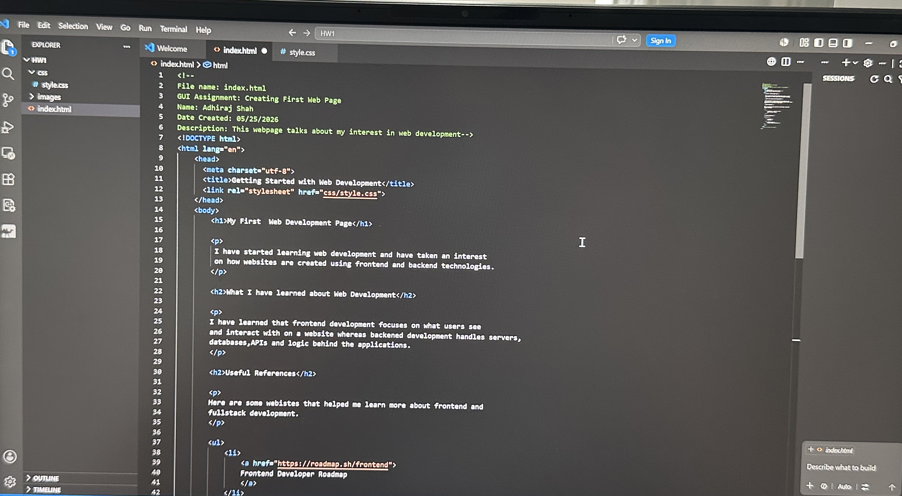

I have started learning web development and have taken an interest on how websites are created using frontend and backend technologies.
I have learned that frontend development focuses on what users see and interact with on a website whereas backened development handles servers, databases,APIs and logic behind the applications.
Here are some webistes that helped me learn more about frontend and fullstack development.
| FrontEnd | BackEnd |
|---|---|
| What users see | Handles database and servers |
